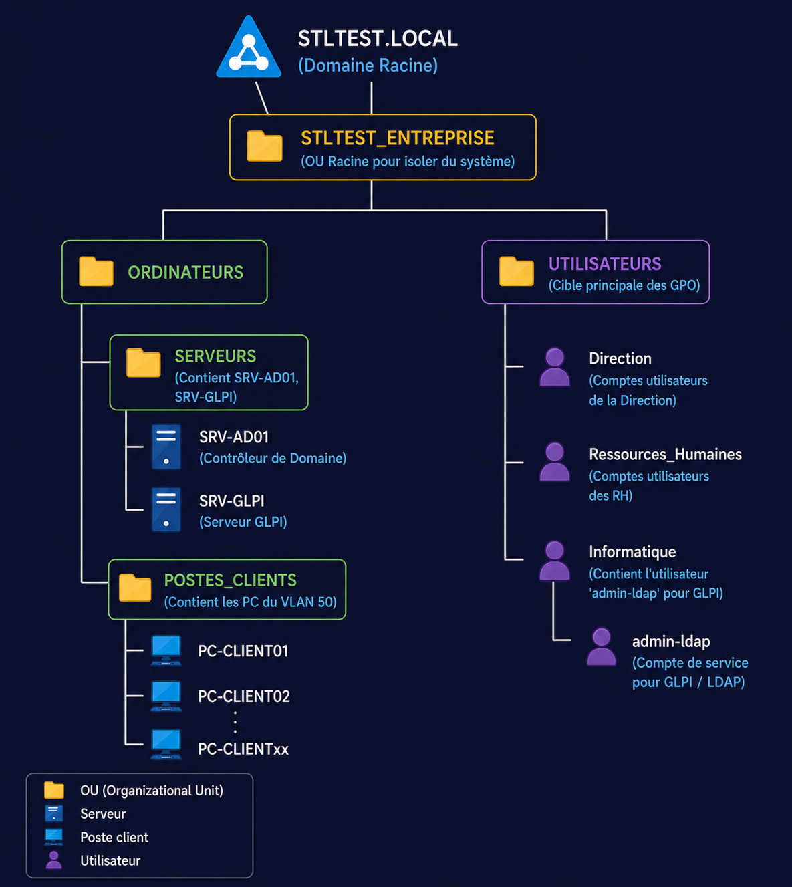

Réalisations N°02
Mise en œuvre d'une infrastructure Active Directory et d'un service de Helpdesk GLPI
Ce projet combine l'administration de systèmes Windows Server 2022 et Linux , en mettant l'accent sur la centralisation des identités et la structuration du support technique.
L'objectif principal est dde faire évoluer l'infrastructure de l'organisation STLTEST vers une gestion centralisée et sécurisée.
1. L'annuaire Active Directory (AD DS)
L'Active Directory est le pilier de l'identification au sein de l'organisation. Il permet de regrouper les ressources (utilisateurs, ordinateurs, groupes) dans un annuaire sécurisé.
Les intérêts majeurs de cette mise en œuvre sont :
- Administration centralisée : Gestion simplifiée des comptes utilisateurs.
- Sécurisation par GPO : Application de politiques de sécurité (mots de passe, restrictions système).
- Services Réseau : Automatisation de l'adressage (DHCP) et résolution de noms (DNS).

Analyse et Conception Fiche de réalisation Procedure de deploiyement de Windows servers
2. La solution de gestion de parc et Helpdesk (GLPI)
Le support technique de STLTEST était initialement informel. L'installation de GLPI sur un serveur Linux permet de professionnaliser la maintenance et le suivi des incidents.
Pourquoi avoir choisi GLPI ?
- Gestion de parc : Inventaire automatisé des équipements réseau.
- Ticketing : Historisation des pannes et suivi des interventions.
- Interopérabilité : Utilisation du protocole LDAP pour synchroniser les comptes utilisateurs de l'Active Directory.
3. L'interconnexion LDAP : Le "Cœur" du projet
Le point fort de cette réalisation réside dans la communication entre le serveur Windows et le serveur Linux. Grâce au protocole LDAP, les utilisateurs de l'organisation n'ont qu'un seul identifiant pour leur session Windows et pour accéder au support technique.
Les bénéfices pour l'utilisateur :
- Authentification unique (SSO partiel) : Moins de mots de passe à retenir.
- Expérience fluide : Un accès immédiat aux outils de l'entreprise dès la création du compte dans l'AD.

Procedure d'installation et configuration Support de presentation details de la realisation